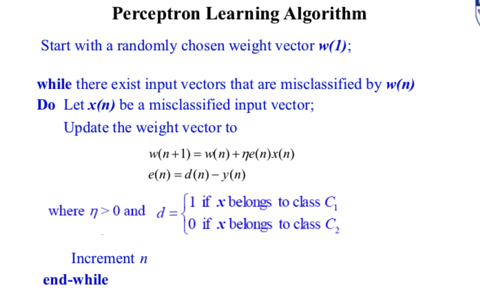
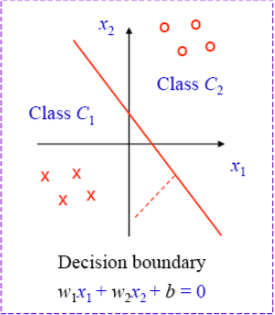

Let us learn this algorithm step by step …
It is given that X → Input and W → weight, moreover they are producing binary output Y which is either 0 or 1.
< 0 which will classify to class 1 that is Y=0 else it will be classified into class Y=1
For each induced field (V) that has been calculated we check with their actual output, and if they are matching we won’t correct it otherwise we have to fix it 👨🏫
Assume the scenario where we got V as 0 whereas in the actual case it was 1. Now we know that we have to update the weights
W’ = W + Δ W
But how are we choosing Δ W?? 🤔
Let us see…
The new induces local field will be
So the question is should we increase the local field or decrease it. If we are taking the scenario that we pictured earlier we know that we have to increase it
Then the equation will be
V'-V= - = >0
For a given vector the easiest way to choose >0 is ΔW= X
To avoid the big jumps in weights in the range of input we(actually Rosenblatt did 🙈) introduced a new term η
ΔW= ηX , η >0
= η >0
W'= W+ηX
But assume the scenario we considered was another way around then we have to reduce the weights rather than increasing them. Hence the equation that we derived right now will change as
W'= W-ηX
To recapitulate, If the actual label was 1 and perceptron miscalculated it to 0 then we will improve weights, on the other hand, if the actual label was 0 and perceptron miscalculated it as 1 we will decrease the weights
For the sake of creating a uniform equation, we need an error (e ) where
e = actual output - calculated output
So let us look into the Perceptron learning algorithms here
Y(n) is calculated by passing the induced local field into a delimiter
Before completing this chapter let us have a peek into the Perceptron Convergence Theorem by Rosenblatt 1962
Grey part If C1 and C2 (the classes) are linearly separable, then the perceptron training algorithm “converges” in the sense that after a finite number of steps, the synaptic weights remain unchanged and the perceptron correctly classified all elements of the training set
Rosenblatt took another 4 years to prove this mathematically that also for the conditions W(1) =0 and η=1
If you feel like you need that proof as well in the coming chapters let me know by clicking the button here
0
PS: That proof is too beautiful to skip ( 😬)